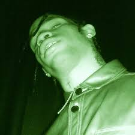
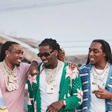
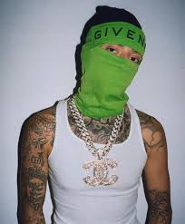

O rap surgiu na década de 1970 no bairro nova-iorquino do Bronx, como uma expressão cultural dos jovens negros e latinos. Utilizando batidas simples e rimas faladas sobre questões sociais e políticas, o rap se tornou um dos gêneros musicais mais influentes da história.
A importância política do rap: artistas como ativistas
O rap é uma forma de protesto e resistência, e muitos artistas têm usado sua música como uma ferramenta de conscientização política. Desde o início, o rap tem abordado questões sociais e políticas importantes, como a violência policial, o racismo, a desigualdade e a pobreza. Muitos artistas de rap se envolveram ativamente na defesa dos direitos civis, na luta contra a opressão e na conscientização sobre questões importantes que afetam as comunidades negras e latinas.
Além de sua influência na música, o rap tem desempenhado um papel importante na cultura popular em geral. A moda, o cinema e a TV têm sido fortemente influenciados pelo estilo e atitude do rap, com muitos artistas de rap se tornando ícones de estilo e moda. Além disso, o rap tem sido amplamente utilizado em trilhas sonoras de filmes e séries de TV, tornando-se uma parte integral da cultura pop moderna.
Melhores Artistas
-
Lil Baby
Saiba Mais -
Travis Scott
 Saiba Mais -
Migos
 Saiba Mais -
Central Cee
 Saiba Mais